Shot Breakdown
Shot 1: 180° BG Matte Painting for a Stereo Theatrical Ride, Dream of Anhui
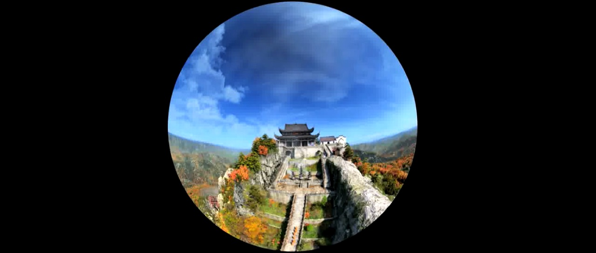
- Created matte painting for background in a stereo film ride, projected on a 180° screen
- Used a combination of 2.5D projections, paint-over, and 3D tree generation in Clarisse
- Foreground elements provided by the environments department
Shot 2: Removed Captain America character for The Avengers
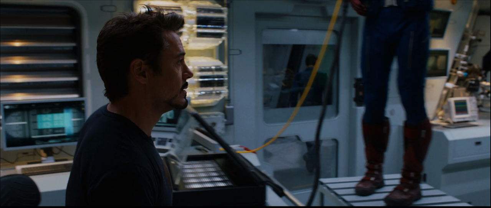
- The director wished to re-order the cut, so Captain America had to go!
- Reconstructed BG wall and hallway covered by Captain and wires with 2.5D projection
- Reconstructed reflections in the glass door
- Painted back in the hallway characters where the wires swing in front of them
Shot 3: CG Compositing for War of the Worlds, Intel Commercial
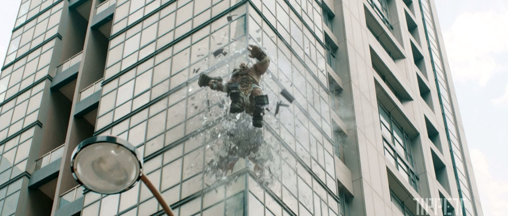
- CG compositing of all elements
- Added debris and glass to pad FX elements for glass breaking and landing on the ground
- Created matte painting for broken concrete as he lands
Shot 4: CG Compositing and Look Development for League of Gods
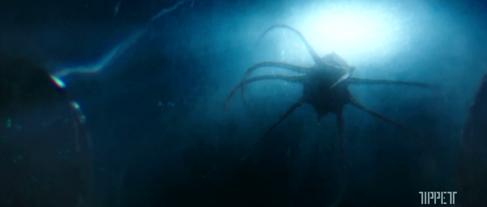
- Look Development for shot - in particular the effect of looking through an underwater bubble
- Created warp effect with glass scratches to imply a barrier
- Created a 2.5-D Nuke setup for the sky with "God Rays" that was used throughout the sequence
Shot 5: CG Compositing for Peter Rabbit
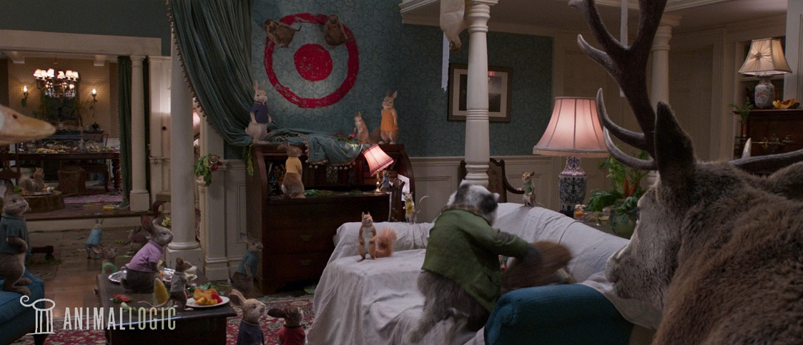
- dialing of CG passes
- added interaction between the characters and the plate, particularly in shot 2
- added animation to the lighting to give the affects of "party lights"
Shot 6: Compositing and Matte Painting for Monster Strike Commercial
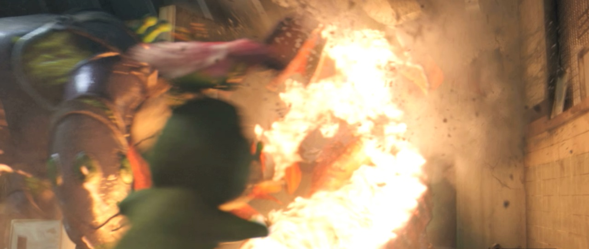
- Created 2.5D Nuke element for broken wall used throughout the sequence
- Created 2.5D Nuke element for ceiling set extension used throughout the sequence
- Recreated doors for new animation as the wall breaks
- Composited shot where dinosaur bursts through the wall - all debris elements added/created in comp
- First and last shot shown were not composited by me (included to show ceiling set extension), and the 3rd shot (pillar being smashed) partially composited by me, and I provided 2D projections for the broken pillar.
Shot 7: Character Replacment for Ted 2
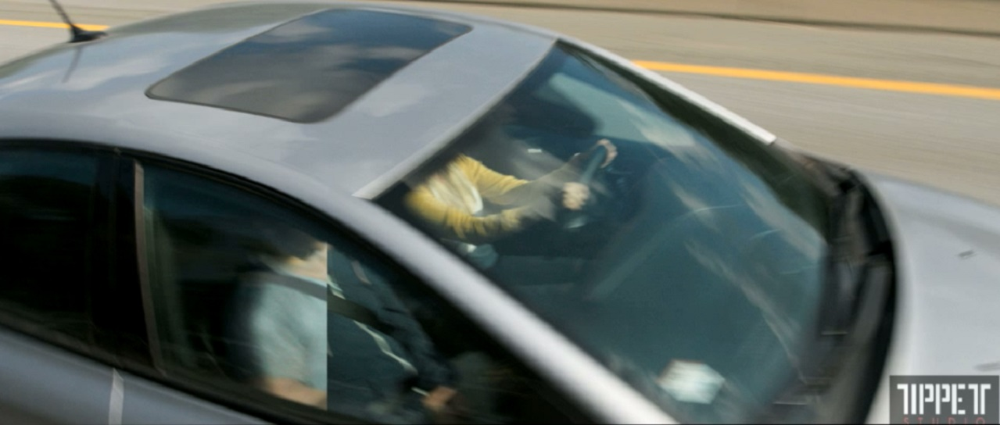
- Replaced man in car with 2.5-D projections in Nuke (for shot continuity)
- Composited reflections back over the car
Shot 8: Compositing for Deliver Us from Evil
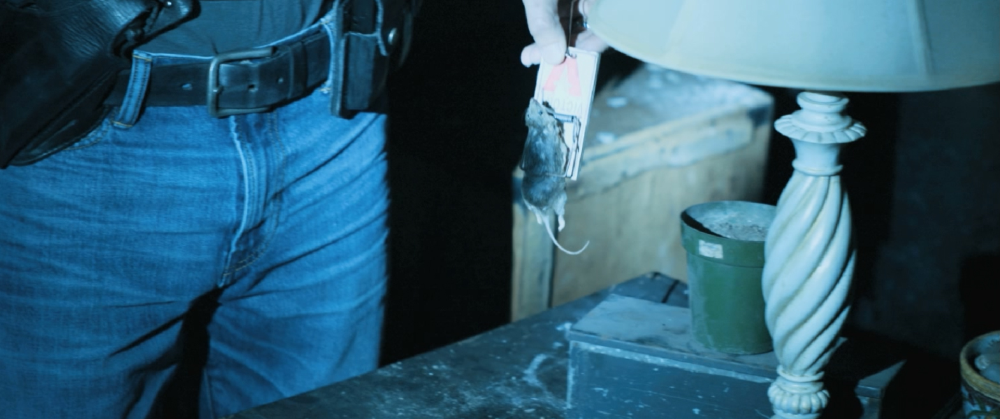
- Re-animated dead mouse using primarily Nuke's spline warp.
Shot 9: CG Compositing for Ted 2
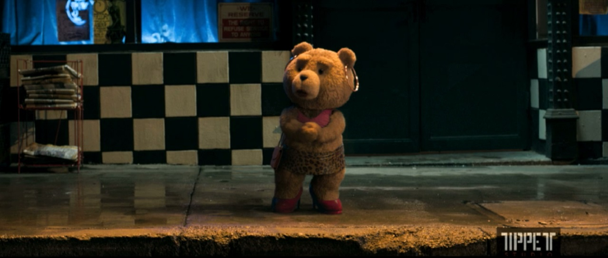
- CG compositing
- Removed placement stand for bear, including woman walking behind it
Shot 10: CG Compositing for Peter Rabbit
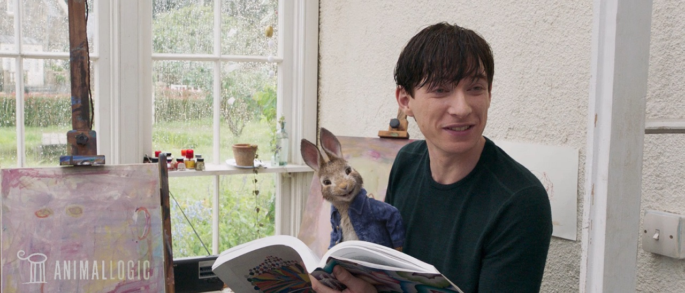
- dialing of CG passes
- added interaction between his shirt and the rabbit
Shot 11: CG Compositing and Look Development for League of Gods
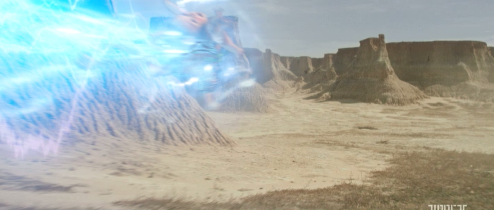
- Look Development for bubble of lightning around the baby
- Added dust elements for when the baby rolls on the ground
- CG compositing of all elements
Shot 12: Compositing for The Wedding Ringer
- Lead Compositor for the sequence
- Created look development for fire and smoke
- Created 2-D warps to mimic refraction through the bottles and glasses
Shot 13: Compositing for Red2
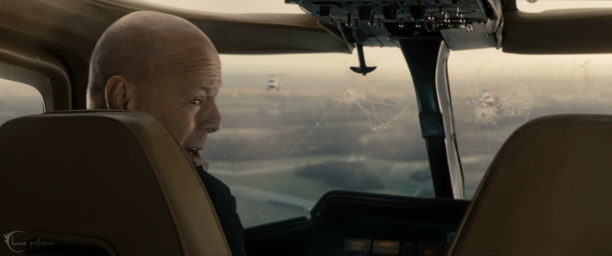
- Greenscreen keying
- Added crack to the windshield
- Applied heavy color correction and spill suppression
- Added a rack defocus
Shot 14: UV texture painting for Disney's A Christmas Carol
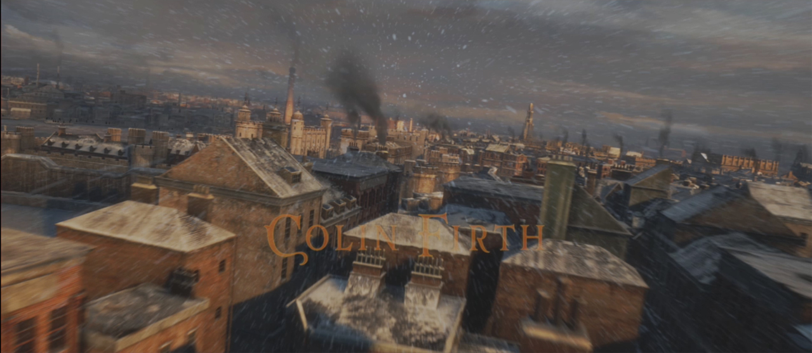
- Painted UV texture maps for a majority of the buildings (about 80%)
Shot 15: Texture Painting for A Christmas Carol
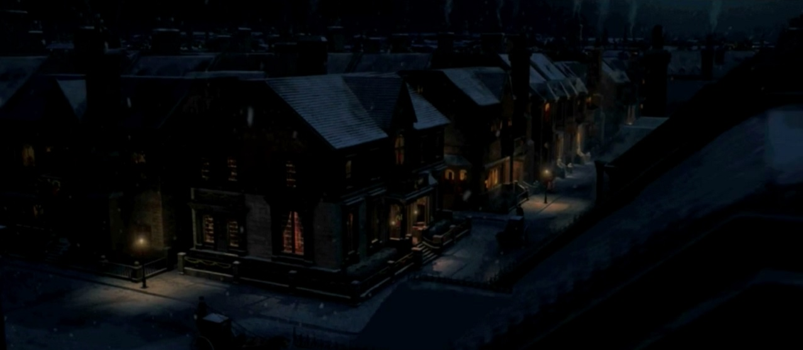
- Created texture for roofs, roads, and bushes from model miniatures
- Created and inserted frost for windows